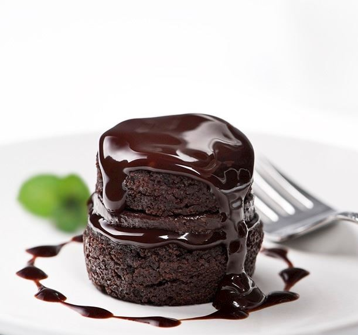

Yoğun Islak Kek (Brownie) Tarifi
Kek için malzemeler
- 3 adet yumurta
- 1 su bardağı şeker
- 1 su bardağından 1 parmak eksik sıvı yağ
- 1 su bardağı süt
- 2 su bardağı un
- 1 paket vanilya
- 1 paket kabartma tozu
- 3 yemek kaşığı kakao
Sosu için
- 1, 5 su bardağı süt
- Yarım su bardağı sıvı yağ
- 1 yemek kaşığı kakao
- 1 su bardağı şeker
Yoğun Islak Kek (Brownie) Tarifi Nasıl Yapılır?
- Öncelikle kek için yumurta ve şekeri iyice çırpıyoruz, daha sonra tüm malzemeleri ekleyip çırpıyoruz.
- Büyük boy dikdörtgen borcam için uygun oluyor.
- Borcamı biraz yağlayıp kek karışımını döküyoruz.
- 170 derece fırında pişiriyoruz.
- Kabardığında kürdanla bakın üstü çok kurumasın.
- Zaten yumuşak bir keki oluyor çok kurumasını beklemeyin yumuşak kalsın.
- Kekimiz pişerken diğer yandan sos için tüm malzemeleri bir kapta çırpıyoruz.
- Kekimiz piştikten sonra sıcakken hemen kürdanla her yerine delikler açıyoruz ve keki dilimliyoruz.
- Kek sıcak, sos soğuk olacak, dilimledikten sonra hemen sosumuzu kekin üzerine döküyoruz.
- İyice sosunu çekip soğuyunca tadı daha güzel oluyor, ben dolaba koyuyorum. Afiyet olsun :)
Kekin sosu pişmiyor, pişmeden malzemeler sadece karıştırılacak.
Denediğim en güzel ıslak kek tarifi diyebilirim :)
Yoğun Islak Kek Nasıl Yapılır? Püf Noktaları
- Kek harcı için gereken malzemeler oda sıcaklığında bekletilmiş olmalı.
- Un, kakao, kabartma tozu gibi katı malzemeleri eleyerek kullanmalısınız.
- Islak keki 3-4 saat buzdolabında bekletirseniz sosunu daha iyi içine çekecektir.
